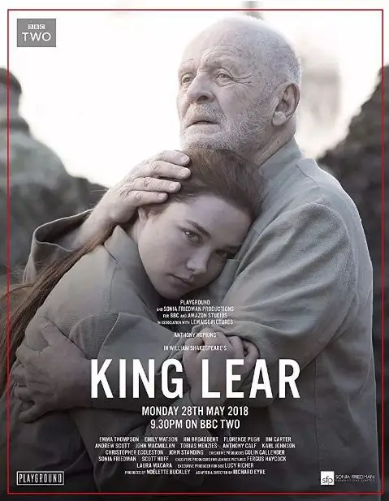
今年BBC翻拍了莎士比亚的著名悲剧《李尔王》。
这次改编，导演将故事设定在现代，从而拉近了与观众的距离，同时又保留了莎士比亚原汁原味的优美台词，使这部作品有更加独特的观感。
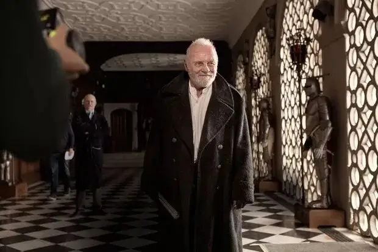
电影由安东尼·霍普金斯、艾玛·汤普森、艾米丽·沃森、弗洛伦斯·珀、吉姆·布劳德本特、安德鲁·斯科特主演，阵容堪称史上最强。
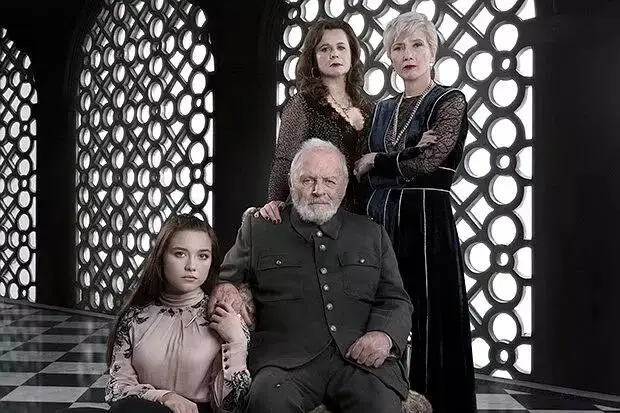
饰演李尔王的安东尼·霍普金斯在本片的表演更是取得了非常大的突破。
他此前塑造的汉尼拔·莱克特博士和《西部世界》里的福特博士总是在安静内敛中透露着一股令人后背发凉的邪气。
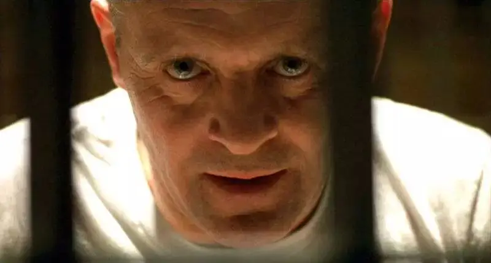
而李尔王恰恰相反，这是一个刚愎自用、举止夸张、言语嚣张的疯癫之人。
要驾驭好这个角色对于安东尼·霍普金斯来说多多少少都是很具挑战性的。
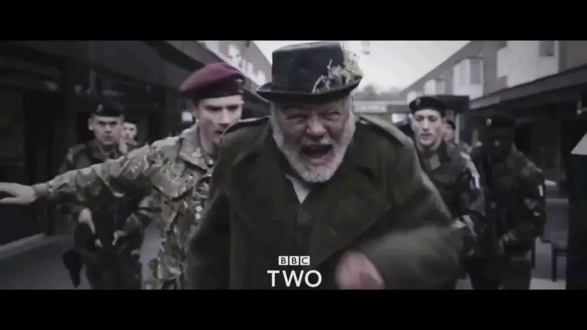
他本人此前在国家剧院舞台上两次出演李尔王，在接受《卫报》采访时，安东尼·霍普金斯表示此前自己太年轻，还演不好李尔王，但是现在他已经做好准备了。
因为出演本片时，霍普金斯和李尔王同龄，都是80岁。
久经岁月沧桑的霍普金斯更能体会李尔王的心路历程，并对这个角色有了更深的理解。
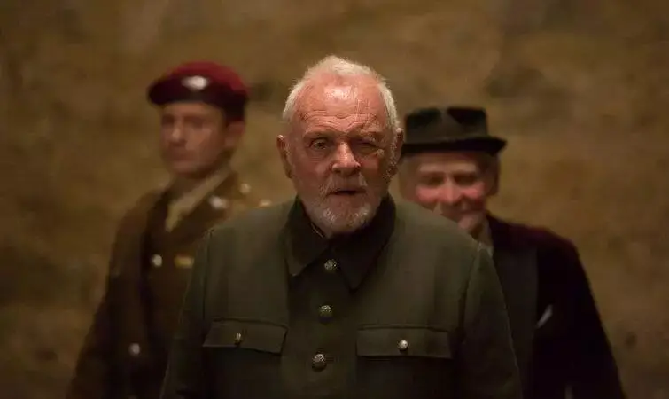
的确，霍普金斯在本片的表演非常出色，他完全演活了李尔王，以至于我在观看过程中很担心这位80岁高龄的老戏骨会在激烈的言辞和动作中晕倒。
因为李尔王真的是太悲恸了！
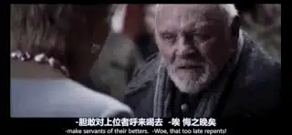
李尔是不列颠的国王，80岁的他打算退位并将自己的国度交由三个女儿统治，他告诉三个女儿和女婿自己将会把最大部分领地赏赐给最爱他的人。
于是，他问三个女儿：“告诉我，你们中间哪一个人最爱我？”
大女儿和二女儿穷尽所有美丽虚浮的词汇表达了对李尔王的爱。
她们得到了李尔王的称赞和奖赏。
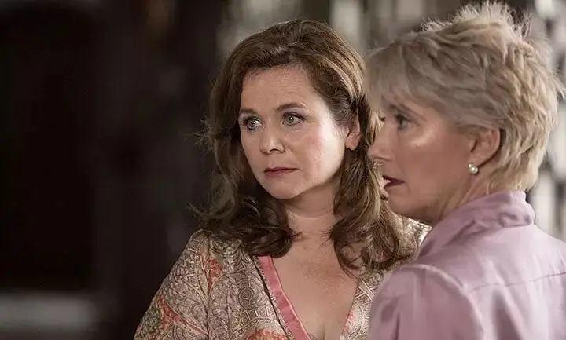
但是，小女儿寇蒂莉亚不愿用虚伪的辞藻向父亲献媚，她告诉父亲：
我爱您只是按照我的名分，一分不多，一分不少。
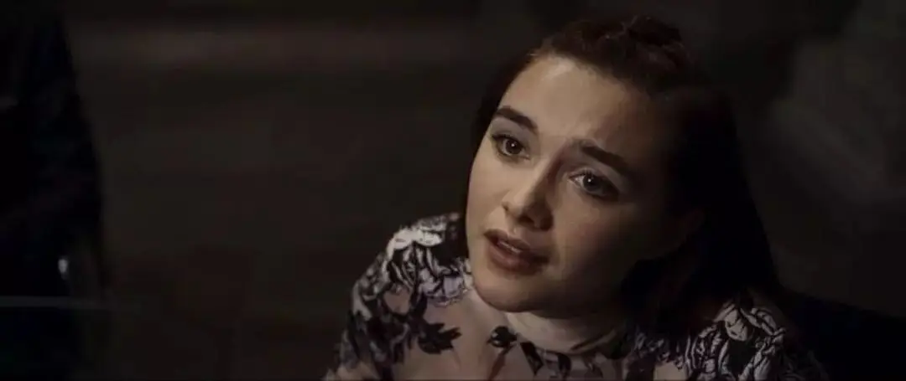
寇蒂莉亚的回答激怒了李尔王，他在盛怒中取消了寇蒂莉亚的继承权，将国度分割给了大女儿高纳里尔和二女儿里根。
李尔王衷心的部下肯特认为此举不公，表示反对，却遭到李尔王的流放。
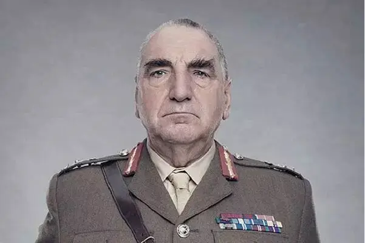
之后李尔宣布自己将会在高纳里尔、里根两家轮流居住，并为自己预留了一百名骑士作为随从。
可是在两个女儿眼中，没有权力的李尔不过是个老朽而已。
两个女儿无法忍受李尔带着100个随从在自己的官邸嚣张跋扈，她们对李尔十分轻蔑，不仅命令父王端正行为，还削减了他的随从人数。
昨天还高高在上，如今却遭受如此屈辱，李尔王大声呵斥、咒骂了两个女儿。
在一个雷雨交加、狂风大作的夜晚，这个不可一世的李尔王净身出户。
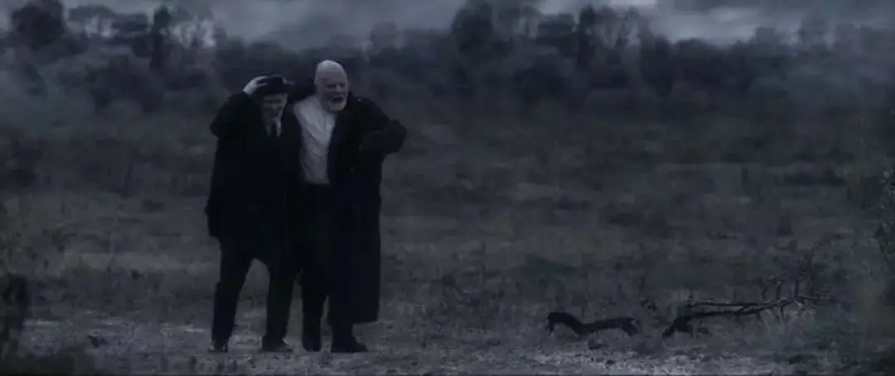
伴随着李尔王的衰败，一个卑微的人却在逐步登上权力的高峰。
他是李尔部下葛罗斯特伯爵的私生子爱德蒙，他设计陷害哥哥爱德伽，致使爱德伽沦为流浪汉。
| 爱德蒙
爱德蒙甚至出卖自己的父亲，使得葛罗斯特双眼被挖。
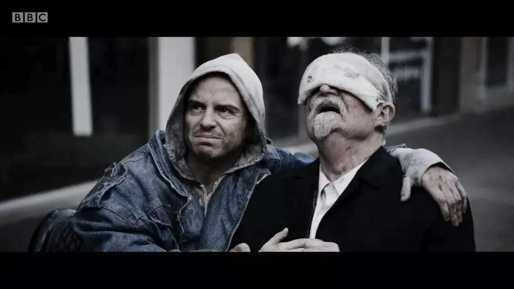
| 爱德伽与葛罗斯特
为了攀登权力的高峰，爱德蒙不择手段，他和高纳里尔、里根结成联盟，想要彻底杀害李尔王和寇蒂莉亚。
然而，一场命运的派对正在等着他们。
.........
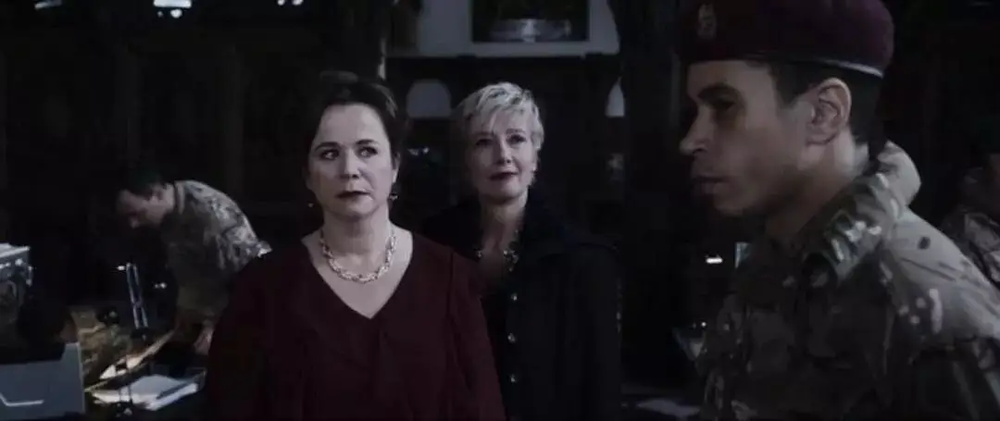
《李尔王》属于莎士比亚中晚期的作品，此时的他已经从早期的理想主义步入到现实主义，创作上从喜剧转向了悲剧。
这不仅与莎士比亚的成长经历有关，也与当时的时代有关。
莎士比亚所在的16世纪，倡导为达目的不择手段的马基雅维利主义非常盛行，再加上宗教改革和文艺复兴运动的影响，自我中心的个人主义开始大行其道。
马基雅维利主义再加上自我中心都在不断瓦解着基督教塑造的节制和舍己，导致当时的时代道德沦丧、充满冷漠和欺诈。
《李尔王》中葛罗斯特描述的比较生动:
亲爱的人互相疏远,朋友变为陌路,兄弟化成仇雠;
城市里有暴动,国家发生内乱,宫廷之内潜藏着谋逆.....
这成为了李尔王和葛罗斯特悲剧的重要原因。
大女儿、二女儿以及爱德蒙都是马基雅维利主义的信徒，她们为了自己的利益无视任何手足之情和父子之情，甚至不惜对李尔王和葛罗斯特痛下杀手。
而李尔王、葛罗斯特虽然有性格上的悲剧，但是他们仍然是传统道德的捍卫者。
故事虽然没有交代李尔王年轻时候的状态，但是从他的手下肯特身上可以看出，李尔王年轻时候一定是一个极具道德魅力的君王。
可惜，无限膨胀的权力让他跌入到自我崇拜的骄傲中，即使是父女之间的平等之爱中，他仍然在其中寻求被人崇拜、夸赞的感觉。
所以，当小女儿没有向他低头的时候，李尔王被激怒了。
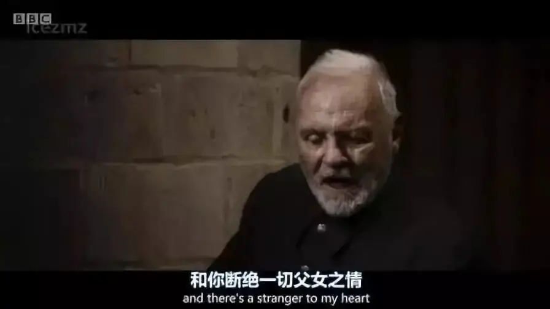
自我崇拜的骄傲已经冲昏了李尔王的理智，这最终导致了李尔王的悲剧。
葛罗斯特也是如此，位高权重的他一听到爱德蒙说爱德伽要侵吞他全部的财富，就立马怒火中烧。
骄傲和自大已经让他没有办法去思考和聆听，即使对方是自己最爱的大儿子爱德伽。
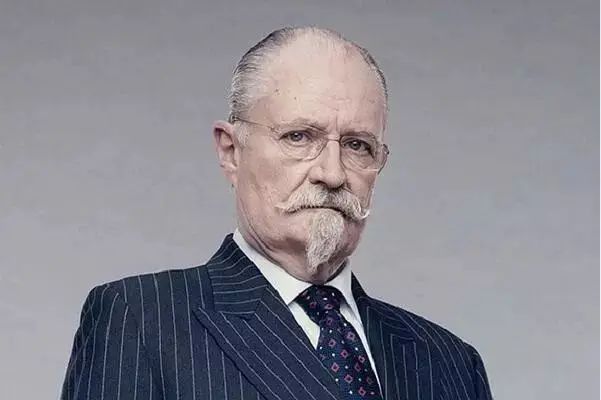
| 葛罗斯特
莎士比亚该如何面对这些罪恶和悲剧！
正如海伦·加德纳所言：
莎士比亚的悲剧“所揭示的神秘，都是从基督教的观念和表达中产生出来的，他的一些最有代表性的特点，都是与基督教的宗教感情和基督教的理解相联系的。
莎士比亚通过悲剧来洗礼这些可怜又可恨的罪人，通过痛苦和死亡让他们学会了宽恕和谦卑，同时也控诉着那个时代的败坏。
试想一下，对于癫狂、骄傲的李尔王，除了这样的人间惨剧之外，还能有什么可以让他可以重拾谦卑和平安。
当李尔王被女儿轻蔑、侮辱的时候，他才深刻的知道人类的自私之罪到底有多恐怖。
所以李尔王咬牙切齿地说：
“叫他们剖开里根的身体来，看看她心里有些什么东西。
究竟为了什么天然 的原因，她们的心才会变得这样硬？”
当李尔王和那些穷苦人一起在简陋的帐篷中避雨的时候，他才知道这个世界竟然有人受着这样的痛苦：
衣不蔽体的不幸的人们，无论你们在什么地 方，都得忍受着这样无情的暴风雨的袭击，你们的头上没有片瓦遮身，你们的腹中饥肠雷动，你们的衣服千疮百孔，怎么抵挡得了这样的气候呢？……
安享荣华的人们啊，睁开你们的眼睛来，到外面来体味一 下穷人所忍受的苦，分一些你们享用不了的福泽给 他 们，让上天知道你们不是全无心肝的人吧！
李尔王从人生的巅峰骤然之间跌入到谷底，在跌落的过程中又很快地瞥见了人间地狱。
可是这场降落和悲惨太过于猛烈，80岁的倔老头变成了疯子。
不可一世的李尔王大声呼叫：“谁能够告诉我，我是什么人？”
李尔王无法原谅那些坏蛋，也无法原谅自己。
他再也不想理会权力，也不想关心任何人、任何事，他宁愿做个忘却所有烦恼的乞丐。
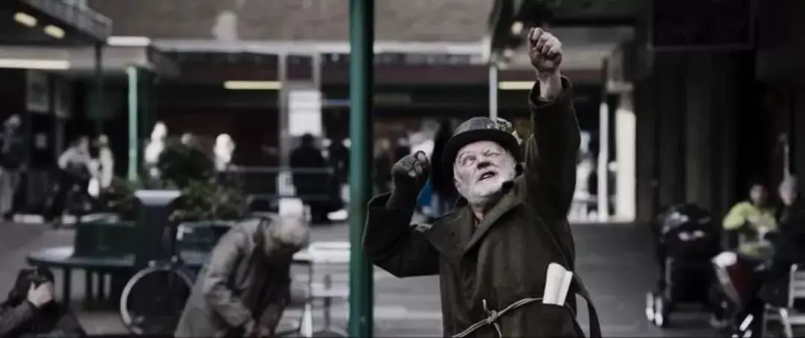
可是莎士比亚并没有让悲剧停在这里，他要将悲剧推到极点，在那里他要用死亡去拷问每一个人：我们的希望到底在哪里？
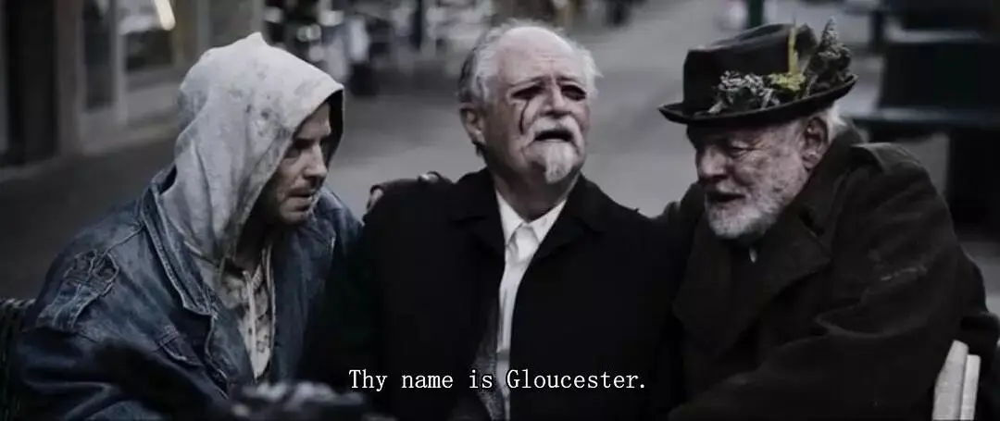
小女儿寇蒂莉亚后来找到了发疯的父亲，在她悉心照顾下，李尔王渐渐恢复了理智。
接着，寇蒂莉亚像一个可爱而孝顺的女儿那样跪下请求父亲为她祝福，而李尔王也费力地跪下请求她的宽恕。
苦难和悲惨让刚愎自用的李尔王学会了宽恕，如果结局停在这里该有多好。
可是命运无常，寇蒂莉亚和李尔王被两个姐姐俘虏了，最终，寇蒂莉亚死在了李尔王的面前。
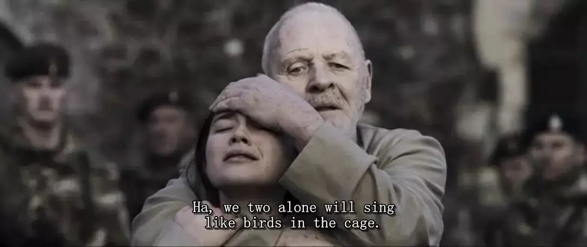
李尔王彻底绝望了，是可爱的寇蒂莉亚给了自己活下去的勇气，可是命运却将李尔王最大的希望无情地夺去了！
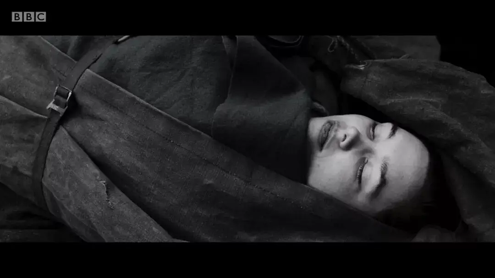
李尔王抱着女儿的尸体痛哭：
我的傻孩子被绞杀了！没，没有命了！为什么一条狗一匹马一只老鼠都有命，而你偏偏没有气息了呢？你永不再来了，永不，永不，永不，永不，永不！
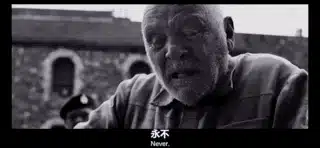
| 老爷子的表演太到位了
萧伯纳曾写道：“没有人可以写出比‘李尔’更加悲惨的戏剧了。”
这个结局让每个观众心如刀割，这就是《李尔王》的魅力。
莎士比亚没有让我们的眼光停在正义战胜邪恶的时刻，也没有停在互相饶恕的眼泪中。
而是停在了人类最软弱的时刻。
那个曾经不可一世的李尔王如今像个无助的小鸟，这就是人类最真实、最难以面对的景况！
不论这个时代多么邪恶，不论我们曾多么用力咒骂着身边的一切，亦或者不论我们从别人身上得到多少的安慰和希望，多么用力地爱着别人。
我们和我们所爱的都将会走向冰冷的死亡。
莎士比亚用艺术把我们带到悲剧的顶点，他的任务已经完成。
处于软弱中的李尔王和我们，所能仰望的只有是穿越坟墓和死亡的上帝之爱。
关注并回复：李尔王
获取电影资源
相关推荐：
这是一部无神论永远都看不懂的获奖电影！
这是一部绝不可辜负的经典
这里没有挑逗你眼目情欲的小鲜肉
也没有挑动你肉体情欲的段子
更没有膨胀你今生骄傲的鸡血
我们只在乎那些最质朴真诚的作品
在那里我们才能恢复真正的想象力
我们也坚信这才是我们真正需要的

ID:Six_hundred_hits
长按二维码，一键关注
【六百击】
-END-
电影评论
尽情分享朋友圈

苹果打赏
通道
小提示：文末广告是腾讯配送广告，内容与本号无关，但您的每次点击（无需反复点）都会给平台带来几毛收益，欢迎您点击支持六百击。